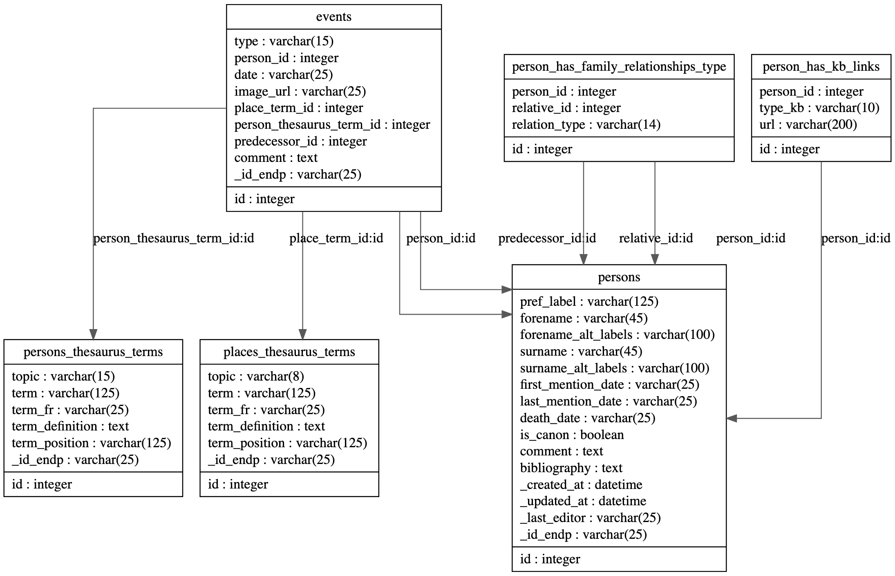

Base de données e-NDP¶
Schéma général¶
{kind=link}
Remarques générales¶
Note
Le _ devant les attributs signifie qu’ils sont générés de manière automatique lors d’une injection en base.
Note
[REQ.] indique que le champ est obligatoire. [OPT.] indique que le champ est optionnel.
Tables principales¶
- class Person(**kwargs)¶
Bases :
AbstractActionsPersonnes (chanoines & Cie) relevées et identifiées dans les registres de Notre-Dame de Paris.
- Paramètres:
id (PRIMARY_KEY) – Clé primaire autoincrémentée. [REQ.]
_id_endp (STRING(25)) – Identifiant forgé dans la base (avec préfixe per_). [REQ.]
pref_label (STRING(125)) – Libellé préférentiel normalisé de la personne. [REQ.]
forename (STRING(45)) – Prénom préférentiel (nomen). [REQ.]
forename_alt_labels (STRING(100)) – Formes alternatives du prénom (nomen). [REQ.]
surname (STRING(45)) – Nom de famille préférentiel (cognomen - patronyme). [REQ.]
surname_alt_labels (STRING(100)) – Formes alternatives du nom de famille (cognomen - patronyme). [REQ.]
first_mention_date (STRING(25)) – Année de la première mention de la personne dans les registres (sous la forme YYYY ou ~YYYY si approximatif). [REQ.]
last_mention_date (STRING(25)) – Année de la dernière mention de la personne dans les registres (sous la forme YYYY ou ~YYYY si approximatif). [REQ.]
death_date (STRING(25)) – Date de décès (YYYY, ou YYYY-MM ou YYYY-MM-DD) [OPT.]
is_canon (BOOLEAN) – chanoine (1) ou non chanoine (0) [REQ.]
comment (TEXT) – Commentaire libre. [OPT.]
bibliography (TEXT) – Bibliographie. [OPT.]
_created_at (DATE) – Date de création de la fiche. [REQ.]
_updated_at (DATE) – Date de mise à jour de la fiche. [REQ.]
_last_editor (STRING(25)) – Dernier éditeur de la fiche. [REQ.]
- class Event(**kwargs)¶
Bases :
AbstractActionsListe d’événements pouvant survenir dans le parcours d’une personne:
- Les types d’événements sont les suivants :
Entrée
Sortie
Achat d’une maison canoniale
Choix de la sépulture
Cf.
EventTypeLabels- Paramètres:
id (PRIMARY_KEY) – Clé primaire autoincrémentée. [REQ.]
_id_endp (STRING(25)) –
Identifiant forgé dans la base avec le préfixe correspondant :
Entrée : evt_entree_,
Sortie : evt_sortie_,
Achat d’une maison canoniale : evt_achat_maison_,
Choix de la sépulture : evt_choix_sepulture_ [REQ.]
type (ENUM(EventTypeLabels)) – Type d’événement (Cf.
EventTypeLabels). [REQ.]person_id (FOREIGN_KEY(Person)) – Identifiant de la personne concerné par l’événement. [REQ.]
date (STRING(25)) – date de l’événement (YYYY, YYYY-MM, ou YYYY-MM-DD) [OPT.]
image_url (STRING(25)) – URL de l’image du registre. [OPT.]
place_term_id (FOREIGN_KEY(PlacesTerm)) – Identifiant du lieu lié à l’événement. [OPT.]
person_thesaurus_term_id (FOREIGN_KEY(ThesaurusTerm)) – Identifiant du terme du thesaurus pour une personne (statuts, charges & offices, choeur et dignités) lié à l’évenement. [OPT.]
predecessor_id (FOREIGN_KEY(Person)) – Identifiant de la personne précédente (pour les permutacio par exemple) [OPT.]
comment (TEXT) – Commentaire libre. [OPT.]
- class ThesaurusTerm(**kwargs)¶
Bases :
AbstractGenericThesaurusTermThesaurus pour les personnes.
- Les topics sont les suivants :
Status
Dignités
Ordres sacrés
Charges et offices
Chœur
- Paramètres:
id (PRIMARY_KEY) – Clé primaire autoincrémentée. [REQ.]
_id_endp (STRING(25)) –
Identifiant forgé dans la base avec le préfixe correspondant :
Statuts : term_sts_,
Dignités : term_dgn_,
Ordres sacrés : term_ors_,
Charges et offices : term_ceo_,
Choeur : term_cho_ [REQ.]
topic (ENUM(ThesaurusTopicLabels)) – Topic du thesaurus [REQ.]
term (STRING(125)) – prefLabel. [REQ.]
term_fr (STRING(25)) – prefLabel en français. [OPT.]
term_definition (TEXT) – Définition. [OPT.]
term_position (STRING(125)) – Numéro d’ordre. [OPT.]
- class PlacesTerm(**kwargs)¶
Bases :
AbstractGenericThesaurusTermThesaurus pour les lieux.
- Les topics sont les suivants :
Cloîtres
Prévôtés
Domaines
Chapelles
Cf.
ThesaurusPlacesTopicsLabels- Paramètres:
id (PRIMARY_KEY) – Clé primaire autoincrémentée. [REQ.]
_id_endp –
Identifiant forgé dans la base avec le préfixe correspondant :
Cloîtres : place_cloitre_,
Prévôtés : place_prevote_,
Domaines : place_domaine_,
Chapelles [REQ.] : place_chapelle_
term (STRING(25)) – prefLabel. [REQ.]
term_fr (STRING(25)) – prefLabel en français. [OPT.]
term_definition (TEXT) – Définition. [OPT.]
term_position (STRING(125)) – Numéro d’ordre [OPT.].
topic (ENUM(ThesaurusPlacesTopicsLabels)) – Topic du thesaurus de lieux [REQ.]
Tables de relations¶
- class PersonHasKbLinks(**kwargs)¶
Bases :
BaseUne personne peut avoir 1 ou plusieurs liens vers des bases de connaissances
- Paramètres:
id (PRIMARY_KEY) – Clé primaire autoincrémentée. [REQ.]
person_id (FOREIGN_KEY(Person)) – Identifiant de la personne à lier. [REQ.]
type_kb (ENUM(KnowledgeBaseLabels)) – Type de relation familiale. [REQ.]
url (STRING(200)) – Url vers la base de connaissance. [REQ.]
- class PersonHasFamilyRelationshipType(**kwargs)¶
Bases :
BaseUne personne peut avoir 1 ou plusieurs relations familiales.
- Paramètres:
id (PRIMARY_KEY) – Clé primaire autoincrémentée. [REQ.]
person_id (FOREIGN_KEY(Person)) – Identifiant de la personne. [REQ.]
relative_id (FOREIGN_KEY(Person)) – Identifiant de la personne avec laquelle on associe une relation familiale. [REQ.]
relation_type (ENUM(FamilyRelationshipLabels)) – Type de relation familiale. [REQ.]
Listes énumérées¶
- class FamilyRelationshipLabels(value)¶
Bases :
EnumListe contrôlée des types de relations familiales.
- Paramètres:
IS_SON_OF – fils de
IS_DAUGHTER_OF – fille de
IS_SPOUSE – conjoint(e) de
IS_FATHER_OF – père de
IS_MOTHER_OF – mère de
IS_NEPHEW_OF – neveu de
IS_NIECE_OF – nièce de
IS_UNCLE_OF – oncle de
IS_AUNT_OF – tante de
IS_BROTHER_OF – frère de
IS_SISTER_OF – sœur de
IS_FAMILIAR_OF – familier de
- class KnowledgeBaseLabels(value)¶
Bases :
EnumListe contrôlée des bases de connaissances.
- Paramètres:
WIKIDATA – Wikidata (https://www.wikidata.org/)
BIBLISSIMA – Biblissima (https://portail.biblissima.fr/)
VIAF – VIAF (https://viaf.org/)
DATABNF – DataBnF (https://data.bnf.fr/)
STUDIUM – Studium Parisiense (http://studium-parisiense.univ-paris1.fr/)
COLLECTA – Collecta (http://www.collecta.fr/)
- class EventTypeLabels(value)¶
Bases :
EnumListe contrôlée des types d’événements connus pour une personne.
- Paramètres:
ENTREE – Motif d’entrée de charge pour une personne (par exemple, élection, collation, installation) ; spécifications supplémentaires dans un champ commentaire.
SORTIE – Motif de sortie de charge pour une personne (par exemple expulsion, renonciation, permutation, mort) ; spécifications supplémentaires dans un champ commentaire.
ACHAT_MAISON – Achat d’une maison canoniale.
CHOIX_SEPULTURE – Choix de la sépulture.
- class ThesaurusTopicLabels(value)¶
Bases :
EnumListe contrôlée des topics pour les thesauri qui s’applique aux personnes.
- Paramètres:
STATUTS – Statuts
DIGNITES – Dignités
ORDRES_SACRES – Ordres sacrés
CHARGES_OFFICES – Charges et offices
CHOEUR – Choeur
- class ThesaurusPlacesTopicsLabels(value)¶
Bases :
EnumListe contrôlée des topics pour les thesauri qui s’applique aux lieux.
- Paramètres:
CLOITRE – Cloître
PREVOTE – Prévôté
DOMAINE – Domaine
CHAPELLE – Chapelle
Licence¶
CC-BY-SA 4.0

Le modèle de données e-NDP est mis à disposition selon les termes de la Licence Creative Commons Attribution - Partage dans les Mêmes Conditions 4.0 International.
{kind=link}
Ce travail a bénéficié d’une aide de l’État gérée par l’Agence Nationale de la Recherche.